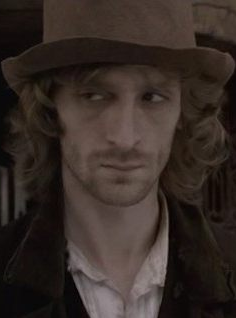
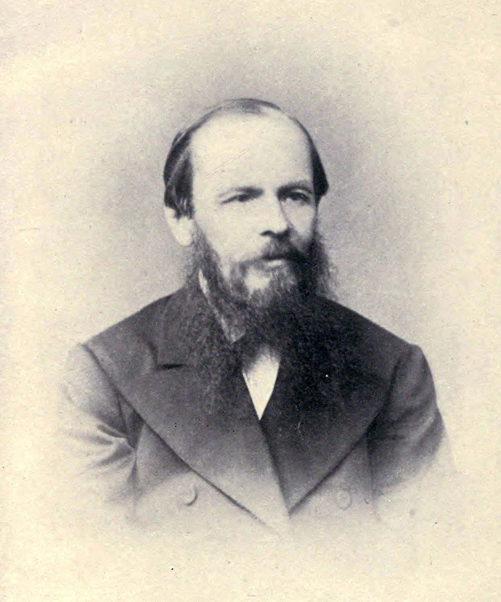
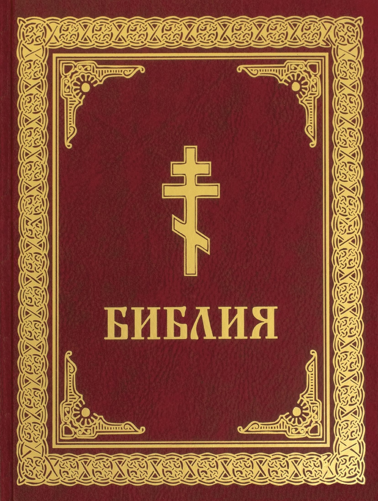
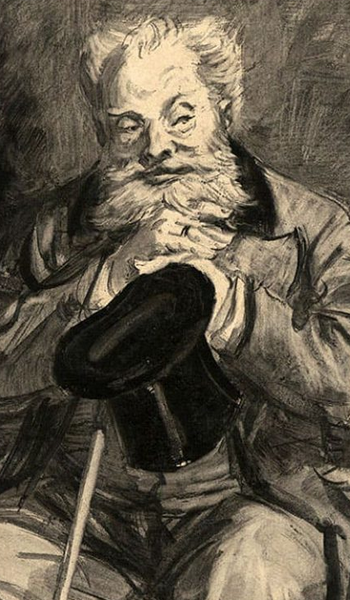
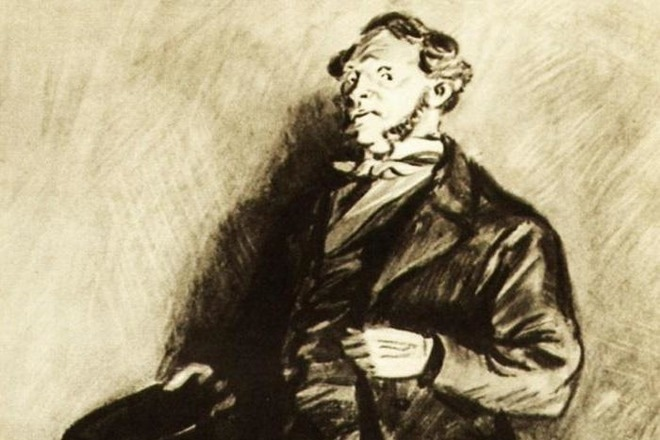

"Преступление и наказание"
Познакомьтесь со скрытыми мотивами романа великого писателя, Ф.М.Достоевского, в удобном веб-формате.
На сайте описан конфликт романа "Преступление и наказание", его философия, скрытые мотивы. Узнайте больше о бессмертном творении великого автора.
Философия романа
Познакомьтесь с конфликтом романа, его участниками и их мировоззрениями

Родион Раскольников
Главный герой. Приверженец антигуманной теории
- Все люди делятся на "тварей дрожащих" и "право имеющих"
- Можно убить одного плохого ради сотни других
- Человек рождён для того, чтобы даказать, что он "право имеющий"

Фёдор Михайлович Достоевский
Автор романа. Приверженец теории гуманизма
- Не будет гармонии в мире, пока прольётся хоть одна слеза ребёнка
- Все люди равны, и каждый человек имеет право на уважение
- Человек рождён для счастья, а счастье - в служении людям
Библейские мотивы
Автор приводит в своём произведении отсылки на библейские сюжеты. Наш сайт поможет их расшифровать

Двойники в романе
Узнайте, с помощью какого приёма Достоевский обличает антигуманность своего героя

Аркадий Иванович Свидригайлов
Дворянин, служил два года в кавалерии. Один из самых сложных для восприятия герой: злодей, развратник и циник, Свидригайлов совершает массу добрых дел

Пётр Петрович Лужин
Выходец из разночинной среды, деловой человек. Высшая цель и ценность для адвоката и надворного советника Лужина не справедливое и правосудие, а деньги, которые «равняли его со всем, что было выше его».